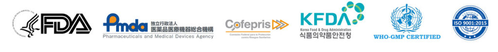

Recognitions/Awards:
Metrochem API has been Awarded by All India Manufacturer's Organization (AIMO) in 2006 for the best performance Award 2006, received from the honorable Governor of A.P., India
Financial:
In a short span of 17 years, we have recorded from USD 0 to above USD 150 million.
Patents:
- Process Patent granted for Preparing Prazole Precursors.
- Process Patent granted for Preparing 4-Chloro Pyridine Derivatives.
- Process Patent granted for Preparing Prazole Compounds.
- Process Patent granted for Preparing Esomeprazole Magnesium Salts.
Certifications:
